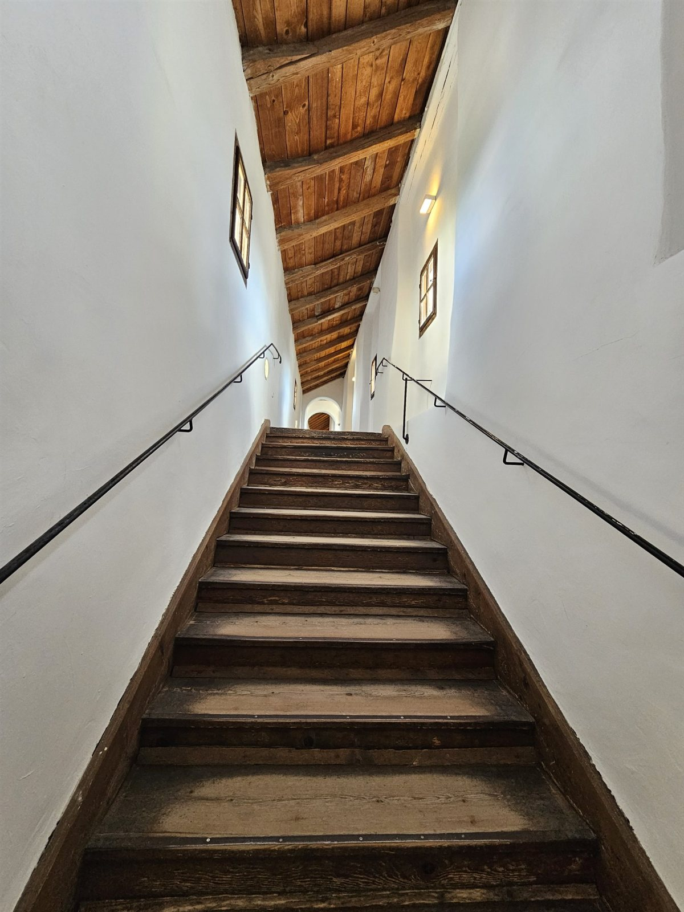

灯りの奥へ
一階は住宅、
二階に小さな灯り。
関新の住宅地に、ふつうの民家がひとつ。玄関の脇の階段を上がると、そこに喫茶そらやがあります。一階は今も住まいとして使われていて、お店は二階だけ。階段を上りきってテラス席を抜けると、ようやく扉の向こうに店内の灯りが見えてくる――そんな、少しだけ探すような道のりも、このお店の時間のうちです。
店内はカウンターと二人掛けの席が数席のみ。決して広くはありませんが、だからこそ生まれる近さがあります。話し声は交わるほど大きくなく、静まり返るほど遠くもない。「静かすぎずうるさくもなく、ちょうどいい」——そう感じていただける空気を大切にしています。一人で本を開くのも、気の置けない相手とゆっくり話し込むのも、どちらも心地よく過ごせる場所です。
